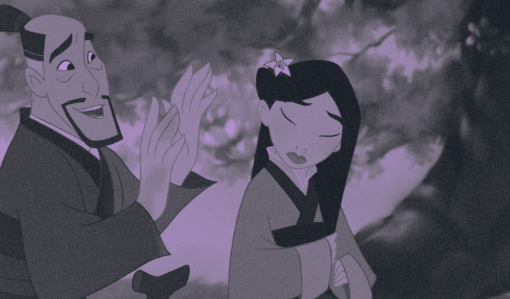
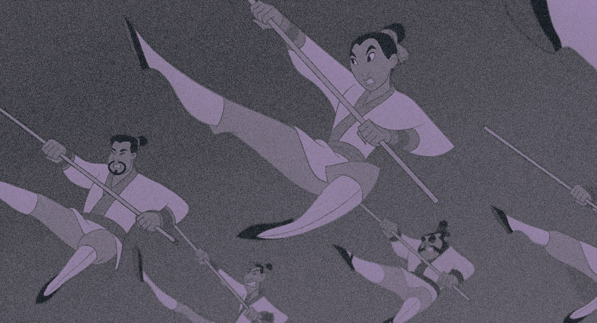

mulan
de COOK bary et BANCROFT tony (1998).
Mulan est une belle jeune fille qui vit dans un village chinois. Malgré son amour et son respect pour sa famille, son mépris des conventions l'éloigne des rôles dévolus aux filles devouées. Quand son pays est envahi par les Huns, Mulan, n'écoutant que son courage, s'engage à la place de son père dans le but de lui sauver la vie. Elle va devenir, avec l'aide d'un dragon en quète de réhabilitation, un guerrier hors du commun.
 - DISTRIBUTION
- WEN Ming-Na : Mulan
- MURPHY Eddie : Mushu
- WONG B. D. : Shang
- FERRER Miguel : Shan-Yu
- HONG James : Chi-Fu
- FORAY June : Grand-mère Fa
- FIERSTEIN Harvey : Yao
- WATANABE Gedde : Ling
- TONDO Jerry : Chien-Po
- OH Soon-Tek : Fa Zhou
- MORITA Pat : L'empereur de Chine
- TAKEI George : Le premeir ancêtre
- FICHE TECHNIQUE
- Titre original : Mulan
- Réalisation : Barry Cook et Tony Bancroft
- Scénario : Rita Hisao, Chris Sanders, Philip LaZebnik, Raymond Singer, Eugenia Bostwick-Singer, d'après une histoire de Robert D. San Souci
- Musique : Jerry Goldsmith
- Genre : horreur, fantastique, drame, thriller
- Durée : 88 minutes